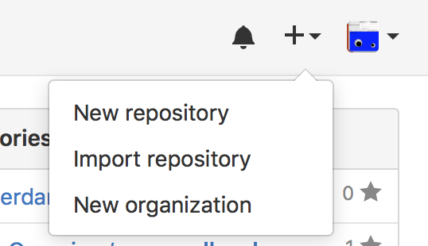
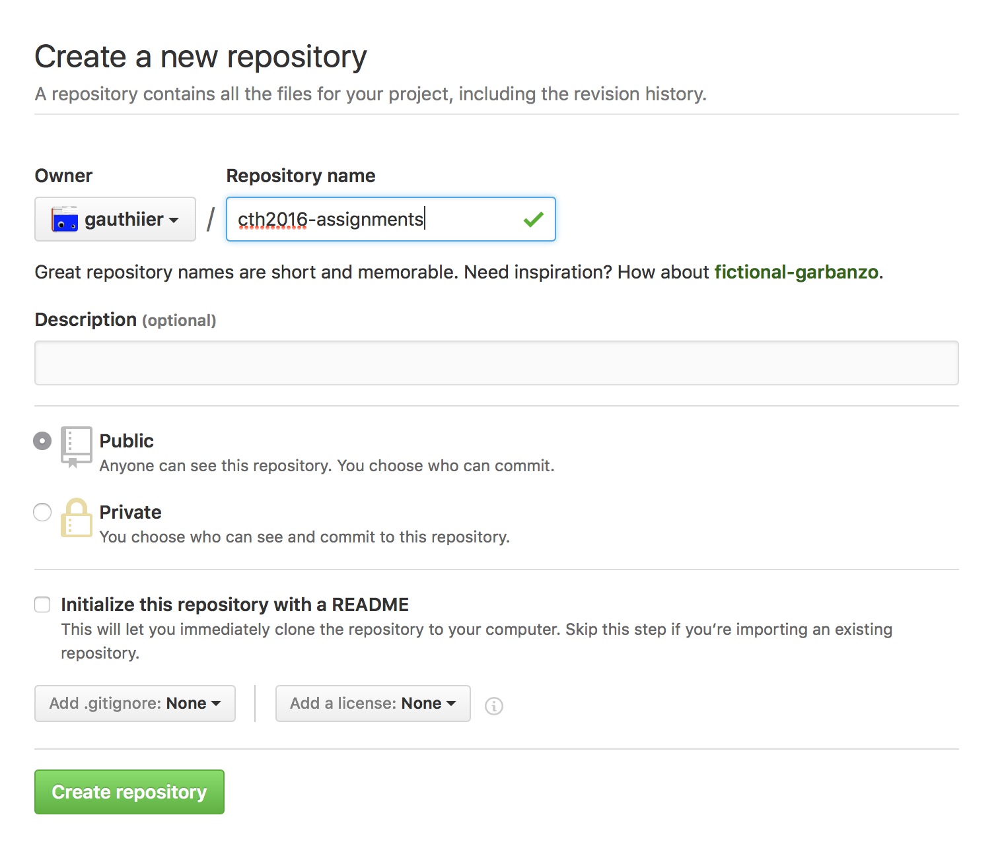
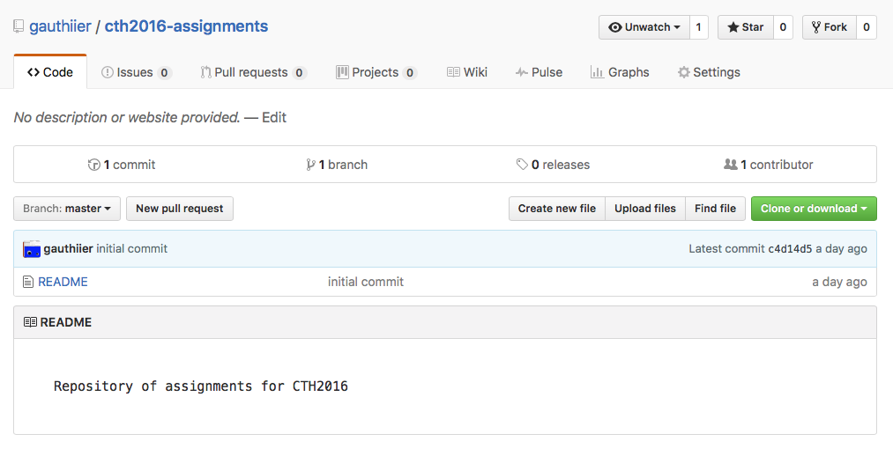
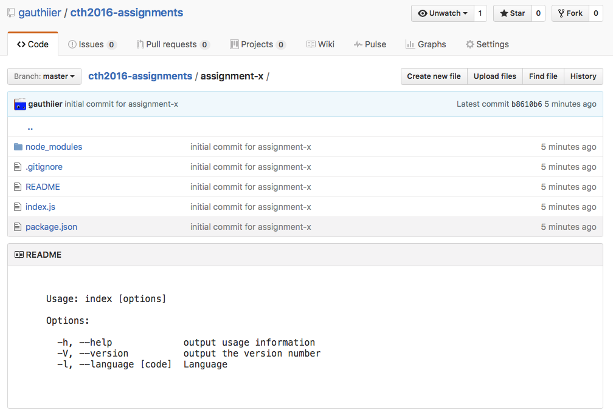

CTH-2016 / Assignments Configuration
Initialising your assignments directory
What follows is a recipe to initialise a git repository for your class assignments.
git init
Let's assume you have a directory on your machine ~/cth2016 where you intend to place all your assignments. To create a dedicated assignments directory:
$ cd ~/cth2016
$ mkdir cth2016-assignments
$ cd cth2016-assignmentsThis will create a new directory ~/cth2016/cth2016-assignments/ that will be turned into a git repository with the following commands:
$ git initgit add
Your directory is now under version control, though there is nothing in there yet. Let's first create a README file describing what the repo is about:
$ echo 'Repository of CTH2016 assignments' > READMEThis command will create a new README file on your system and add to it the echo string. You can, of course, create the file manually using Sublime. To make sure git is keeping track of this new file, emit the following command:
$ git statusThe above should display the new file in the list of changes to the repo since it has been created. Yet the README file is not currently added to the repo (marked in red). To add the file to the repo:
$ git add READMENow git status should list the file in green and mark it as new. Any files that will be added to the directory will need to be added to the repo using the git add command.
git commit
When adding new files or changing them, you need to commit these to the repo:
$ git commit -a -m 'initial commit'From the git command above -a means to you are committing all changes listed by git status and -m is the message for the commit. If you do a git status you should now see that the README file dissapeared from the list of changes since it has just been committed. Changing the README file will re-introduce it to list of changes. A commit is like a recorded snapshot of the repo, any changes that occur after the commit will be flagged in git status.
github
Now that you have added a README file and committed this change to your local repo, it is time to link it to Github so that your instructor and your peers can "clone" it. To do so, login to Github and on the top/right corner of the page select the '+' symbol and 'New repository'

and give it a name, make it public and do not initialise it with a README since you already have one:

When your (now empty) github repo is created, you need to copy its url:

and add a "remote origin" to your local git repo with this command
git remote add origin [your-github-https-url]git push
When this is done, you can now push your local changes to the online github repo
git push origin masterIf you refresh the github webpage, you should now see it updated with your README file

Your local repo and your github repo are now linked and ready to go!
Creating a new assignment (Node + Git)
What follows is a recipe to create a new assignment in your newly initialised git assignments repository.
assignment-x
If you have followed the previous section, you should now have a directory named ~/cth2016/cth2016-assignments/ under which you will add a new assignment-x. To create the new directory:
$ cd ~/cth2016/cth2016-assignments/
$ mkdir assignment-x
$ cd assignment-xnpm init
Node has a package manager named npm (n-ode, p-ackage, m-anager) that automates the task of creating a project from scratch and configures it in a way that is compatible with other node projects. We will use npm during the course of the module.
To initialise a new project/assignment, simply emit the follow command:
$ npm initand you will be asked various questions regarding your project's name, version, description, entry point, author, etc. which you can configure at will (press <'enter'> to select and move to the next configuration step).
A package.json file is created upon the completion of npm init. This file contains all the configurations you selected and can be edited manually.
npm install --save commander
This step is optional, yet recommended for your assignment. When making a node application, modules/libraries can be made part of your project using npm. Thousands of javascript libraries are available on www.npmjs.com which you can install with a simple npm command.
As in the first session of the class on the Command Line Interface (CLI), we will be using "commander" for our applications. To install it for you assignment, use the following command:
$ npm install --save commanderThis will create a node_modules directory next to package.json where the commander code is placed. All modules installed using npm will reside in this node_modules directory.
index.js
Now that you have an npm project created and installed commander it is time to create an index.js file containing the code for the assignment. Though since I am not following a proper assignment per se, I will simply create a simple tri-lingual script that will output "Hello!", "Dag!" or "Allô!" depending on a command line arguments passed to the script which can be of the type en (english), nl (nederlands), fr (français) or nothing.
To create index.js simply type (or, alternatively, create it with Sublime):
$ touch index.jsNow open the file and input the desired code:
// simplest tri-lingual program
var program = require('commander');
program
.version('0.1')
.option('-l, --language [code]', 'Language', /^(en|nl|fr)$/i)
.parse(process.argv);
switch(program.language)
{
case('en'):
console.log('Hello!');
break;
case('nl'):
console.log('Dag!');
break;
case('fr'):
console.log('Allô!');
break;
default:
console.log('...');
break;
}To run the script
$ node index.js -l frwhere you can replace fr by en or nl or nothing. Try it out!
README
One of the interesting feature of commander is that it can auto generate a "help" output from your script based on the command line options you have listed in your program.
To see this help output, simply type:
node index.js --help Usage: index [options]
Options:
-h, --help output usage information
-V, --version output the version number
-l, --language [code] Language
It is very common for command line scripts to feature such --help argument that when executed, displays what the program expects as input. Thus, for this class, each README you will create (for both assignments and final project) is expected to have (at least) this type of "helper documentation".
To initialise a README and add the help output from your script:
$ node index.js --help > READMEYou can, of course, edit this README manually. It is nonetheless a very good practice to start the redaction with the help as it signals how to use your script to people that may be interested in it.
git add
Now that you have a proper project initialised, the next step is to add all its files to git.
Yet before we do so, there one important file you need to fetch from github which will instruct git not to include to you repository unwanted files that may be installed by npm or by your operating system. Git has a special file called .gitignore that lists files and file patterns that have to be ignored by git. Luckily, there is a github repository maintained by the git community that lists common files to ignore depending on the programming language and environment your are using.
To download the Node .gitignore and install it under the current assignment-x, type the following command:
$ wget https://raw.githubusercontent.com/github/gitignore/master/Node.gitignore -O .gitignoreIt is now time to look which file needs to be added to git. In order to do so type:
$ git statusThis should indicate which directories and/or files that are untracked. If you have followed the previous steps, git status should simply signal that the current directory ./ is untracked. To add it to git:
$ git add ./To make sure git properly added the new assignment, simply check with git status that your package.json, index.js, README, and various file in node_modules are marked as new files (green).
git commit
The next step is to commit these new files to your local git repo:
$ git commit -a -m "initial commit for assignment-x"git push
And push the commit to your assignments github repo:
$ git push origin masterYou should now see these changes online in your new cth2016-assignments/assignment-x/ directory:

External Resources
Github
Git
Node